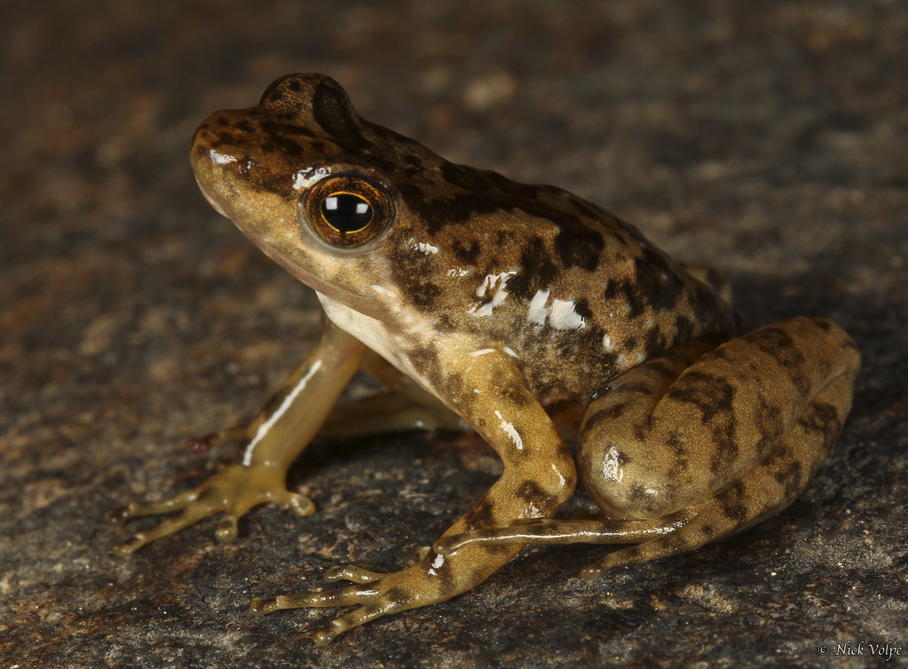
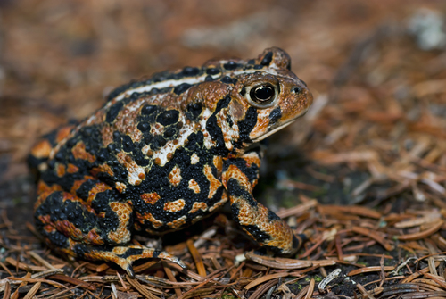
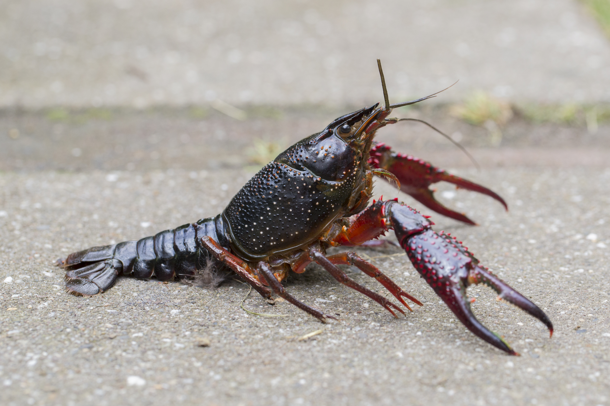
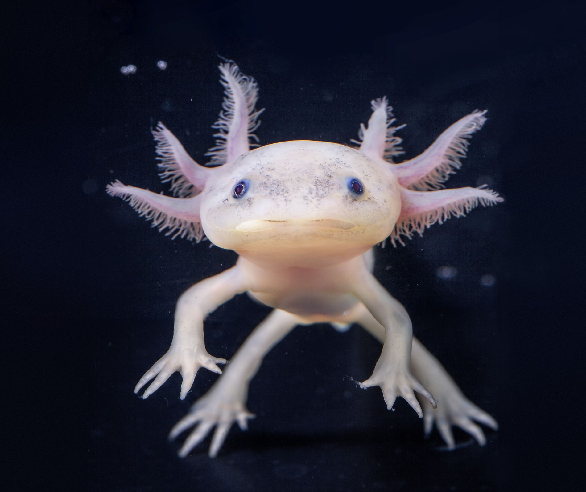
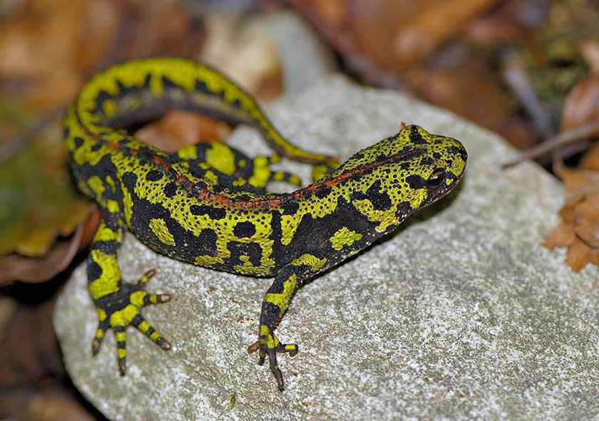

Eungella día Frog

Es una pequeña rana endémica de las selvas tropicales de la región montañosa de Eungella, en Queensland, Australia. Esta especie se distingue por su comportamiento diurno, a diferencia de muchas ranas que son nocturnas. Prefiere vivir en áreas de selva tropical húmeda, cerca de riachuelos y corrientes de agua fresca. Su vida está estrechamente ligada a estos ecosistemas acuáticos, donde pasa su tiempo alimentándose y reproduciéndose.
Hábitad
El Eungella day frog habita en bosques tropicales y subtropicales de montaña, en áreas frescas y húmedas cercanas a cursos de agua como arroyos y riachuelos. Este entorno le proporciona la humedad necesaria para su supervivencia y su ciclo de vida acuático. Los hábitats ideales para esta rana tienen temperaturas moderadas y alta humedad.
Caracteristicas
- Tamaño pequeño: Mide entre 3 y 4 cm de largo, lo que la convierte en una especie compacta.
- Coloración vibrante: Su piel es de color verde brillante o verde oliva, con marcas negras o marrones, lo que le permite camuflarse en su entorno.
- Actividad diurna: Es activa durante el día, lo que es inusual en ranas, que normalmente son nocturnas.
- Reproducción acuática: Su reproducción ocurre cerca del agua, donde pone sus huevos, que luego se desarrollan en larvas acuáticas.
- Amenazada por el hábitat: Su principal amenaza es la pérdida de su hábitat debido a la deforestación y la contaminación del agua, lo que pone en riesgo su supervivencia.
Menu
Sapo de Monte Nimba

El sapo de Monte Nimba es conocido por su apariencia robusta, con una piel rugosa y de color marrón o gris oscuro, lo que le permite camuflarse bien en su entorno rocoso y boscoso. Es un sapo de tamaño mediano a grande, que se encuentra en áreas de alta altitud, en las zonas montañosas y húmedas de la región.
Hábitad
Este sapo se encuentra en las montañas del Monte Nimba, una zona que ha sido declarada Patrimonio de la Humanidad debido a su biodiversidad única. Su hábitat está compuesto por bosques tropicales montanos y ambientes rocosos con abundante humedad. La especie habita principalmente en áreas húmedas y se encuentra asociada a fuentes de agua cercanas, como riachuelos y charcos temporales. Es una especie adaptada a las condiciones de alta montaña y está muy limitada geográficamente a esta región.
Caracteristicas
- Coloración camuflaje: Su piel es de color marrón o gris oscuro, con una textura rugosa, lo que le permite camuflarse eficientemente en su entorno rocoso y boscoso.
- Tamaño: Es un sapo de tamaño mediano a grande, alcanzando un largo de hasta 10 cm en algunos casos.
- Habilidad de adaptación: Está adaptado a vivir en altitudes elevadas (aproximadamente entre 800 y 1,500 metros sobre el nivel del mar) en zonas húmedas y rocosas.
- Reproducción acuática: Durante la temporada de reproducción, los sapos de Monte Nimba se agrupan en pequeños cuerpos de agua donde ponen sus huevos, los cuales se desarrollan en el agua antes de convertirse en renacuajos.
- Especie en peligro: El sapo de Monte Nimba está clasificado como una especie en peligro de extinción debido a la destrucción de su hábitat, el cambio climático y las actividades humanas, como la minería en la región del Monte Nimba.
Menu
Cangrejo de Río

Los cangrejos de río tienen un cuerpo segmentado con un caparazón duro llamado exoesqueleto que los protege. Tienen pinzas grandes y fuertes, que utilizan para defenderse, cazar presas, y también para comunicarse con otros cangrejos. Su color varía según la especie, pero suelen ser de tonos verdes, marrones o rojizos. Son conocidos por su habilidad para caminar de lado debido a la estructura de sus patas.
Hábitad
Los cangrejos de río se encuentran principalmente en ríos, arroyos, lagos y estanques de agua dulce. Prefieren hábitats con agua limpia y bien oxigenada, donde puedan esconderse entre rocas, raíces o madrigueras que excavan en el lecho del río. Los cangrejos de río suelen vivir en zonas de corriente moderada o áreas tranquilas con aguas frescas y limpias.
Caracteristicas
- Exoesqueleto duro: El cangrejo de río tiene un exoesqueleto fuerte, generalmente de color marrón, verde o rojo, que lo protege de depredadores. Este exoesqueleto debe ser mudado regularmente para que el cangrejo crezca.
- Pinzas grandes: Los cangrejos de río tienen una o ambas pinzas más grandes que el resto de su cuerpo. Estas pinzas son usadas tanto para defensa como para capturar y manipular alimentos.
- Comportamiento nocturno: Son animales principalmente nocturnos, lo que significa que tienden a ser más activos durante la noche, buscando alimento y refugio.
- Adaptación a excavar: Los cangrejos de río excavan madrigueras en las orillas de los ríos o lagos, donde se refugian durante el día o cuando las condiciones no son favorables. Estas madrigueras también les sirven como protección de depredadores.
- Reproducción acuática: La reproducción de los cangrejos de río ocurre en el agua. Después de que la hembra pone los huevos, los mantiene pegados a su abdomen hasta que los jóvenes eclosionan y se desarrollan.
Menu
Ajolote

El ajolote es una salamandra que puede medir hasta 30 cm de largo, con un cuerpo alargado, una cola larga y branquias externas en forma de ramificaciones en ambos lados de su cabeza, lo que le da un aspecto distintivo. Su piel es suave, generalmente de color gris, negro o marrón, y puede tener variaciones de tonalidades claras o oscuras. Su característica más destacada son sus branquias externas, que le permiten respirar a través del agua.
Hábitad
El ajolote habita principalmente en los lagos y canales del Valle de México, especialmente en el lago de Xochimilco, que es su hábitat natural. Estos lagos tienen aguas dulces y poco profundas, con vegetación acuática densa que le proporciona refugio y alimento. El ajolote prefiere aguas tranquilas y frescas, y se encuentra en ambientes con poca corriente de agua.
Caracteristicas
- Neotenia: El ajolote mantiene sus características de larva durante toda su vida. A pesar de ser un adulto, sigue con branquias externas y no experimenta la metamorfosis completa que ocurre en otras salamandras, lo que le da su aspecto "juvenil".
- Capacidad de regeneración: El ajolote es famoso por su habilidad para regenerar partes de su cuerpo, incluyendo extremidades, la columna vertebral, el corazón, e incluso partes de su cerebro. Esta habilidad ha sido objeto de mucha investigación científica.
- Respiración branquial y pulmonar: Aunque el ajolote posee branquias externas que le permiten respirar bajo el agua, también puede respirar a través de los pulmones, lo que le permite sobrevivir en aguas con bajo contenido de oxígeno.
- Alimentación: Es un animal carnívoro que se alimenta principalmente de pequeños invertebrados acuáticos, como lombrices, insectos y pequeños peces. También consume plantas acuáticas en algunas ocasiones.
- Reproducción acuática: La reproducción del ajolote ocurre en el agua. Las hembras ponen entre 300 y 1,000 huevos en el fondo de las aguas, los cuales eclosionan después de unos 2 a 3 semanas. Los ajolotes juveniles son bastante similares a los adultos en cuanto a apariencia, pero con un tamaño más pequeño.
Menu
Trirón Jaspeado

El tritón jaspeado es un anfibio de tamaño mediano, con un cuerpo alargado y una cola larga. Los machos, especialmente durante la temporada de reproducción, presentan una coloración más brillante, con un fondo verde o amarillo con manchas negras que forman un patrón jaspeado muy distintivo. Las hembras suelen tener un color más apagado, pero también tienen una combinación de tonos verde oliva o marrón con manchas oscuras.
Hábitad
El tritón jaspeado habita principalmente en zonas de agua dulce, como estanques, lagos, charcos, ríos lentos y arroyos de aguas tranquilas. Prefiere áreas de bosques húmedos, matorrales o zonas agrícolas con vegetación densa, que le proporcionan refugio y alimento. Durante la temporada de reproducción, los tritones jaspeados se agrupan en cuerpos de agua donde se llevan a cabo sus rituales de cortejo.
Caracteristicas
- Coloración jaspeada: Su característica más distintiva es el patrón de manchas negras o oscuras sobre un fondo verde, amarillo o marrón, lo que le da un aspecto jaspeado o moteado, de donde proviene su nombre.
- Tamaño moderado: El tritón jaspeado mide entre 10 y 15 cm de longitud, siendo los machos más pequeños que las hembras en algunas ocasiones.
- Comportamiento acuático y terrestre: Durante la mayor parte del año, el tritón jaspeado es un animal semiacuático, pasando gran parte del tiempo en el agua. Sin embargo, también puede vivir en tierra, especialmente durante la hibernación o en climas más cálidos fuera de la temporada de reproducción.
- Reproducción acuática: La temporada de reproducción se lleva a cabo en cuerpos de agua, donde los machos realizan un elaborado ritual de cortejo, mostrando su coloración brillante para atraer a las hembras.
- Después de la copulación, las hembras ponen sus huevos en las plantas acuáticas, donde las larvas eclosionan.
- Habilidades de regeneración: Al igual que otros tritones y salamandras, el tritón jaspeado tiene la capacidad de regenerar partes de su cuerpo, como extremidades, cola y órganos internos, si estos se dañan.
Menu